คู่มือเริ่มใช้งานเว็บไซต์จำลอง
หน้านี้ทำหน้าที่เหมือนแผนที่สำหรับผู้ใช้ใหม่ ไล่ตั้งแต่หน้าแรก เมนูด้านบน ห้อง Simulation ไปจนถึง Challenge Mode เพื่อให้รู้ว่าต้องกดตรงไหน อ่านข้อมูลส่วนไหน และควรสังเกตอะไรระหว่างทดลอง
Website Overview
เริ่มจากหน้า Home แล้วเลือกเส้นทางที่ต้องการ
เมื่อเปิดเว็บครั้งแรก ให้มองแถบเมนูด้านบนเป็นหลัก เพราะเป็นจุดนำทางไปยังทุกส่วนของเว็บไซต์ ได้แก่หน้าเนื้อหาพื้นฐาน หน้าเลือกห้องจำลอง หน้า Guide และปุ่ม Challenge Mode ที่อยู่ด้านขวา
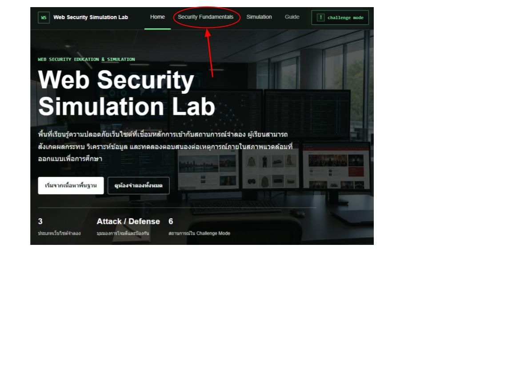
- 1. Homeอ่านภาพรวมว่าเว็บนี้เป็น Lab จำลองด้านความปลอดภัย ไม่ใช่ระบบโจมตีจริง และใช้เพื่อฝึกสังเกตเหตุการณ์เท่านั้น
- 2. Security Fundamentalsเหมาะสำหรับคนที่ยังไม่มั่นใจศัพท์พื้นฐาน เช่น การโจมตี การป้องกัน การตรวจสอบความผิดปกติ และการอ่าน log
- 3. Simulationเลือกเว็บจำลอง 1 ใน 3 แบบ แล้วทดลองทั้งบทบาทฝ่ายโจมตีและฝ่ายป้องกันแบบไม่มีเวลาบังคับ
- 4. Challenge Modeเข้าสู่โหมดท้าทายแบบสุ่มสถานการณ์ มีเฉพาะบทบาทฝ่ายป้องกัน และต้องอ่านอาการจากเว็บประกอบกับเครื่องมือในจอ
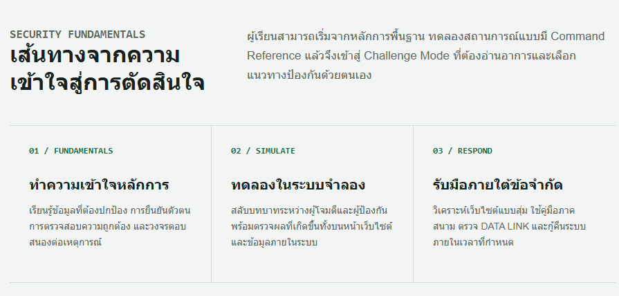
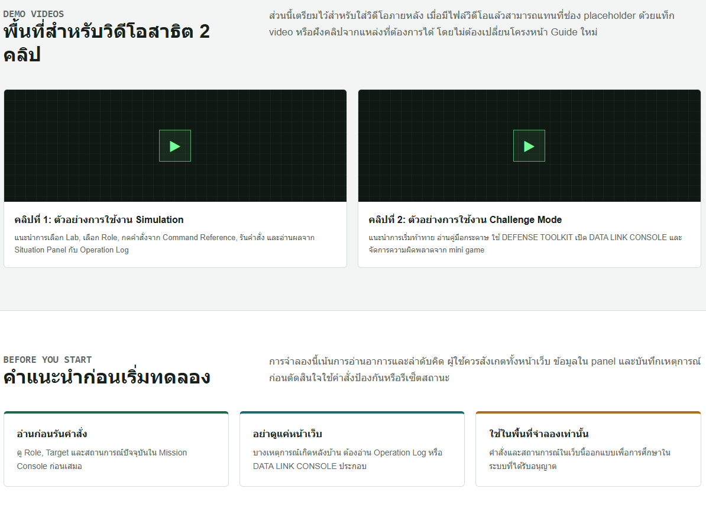
Simulation
วิธีเข้าและอ่านห้องจำลองเว็บไซต์
Simulation เป็นโหมดฝึกแบบเปิด ผู้ใช้สามารถเลือก Lab เอง เลือกบทบาทโจมตีหรือป้องกันเอง และทดลองคำสั่งได้หลายครั้ง เหมาะสำหรับทำความเข้าใจก่อนเข้า Challenge Mode
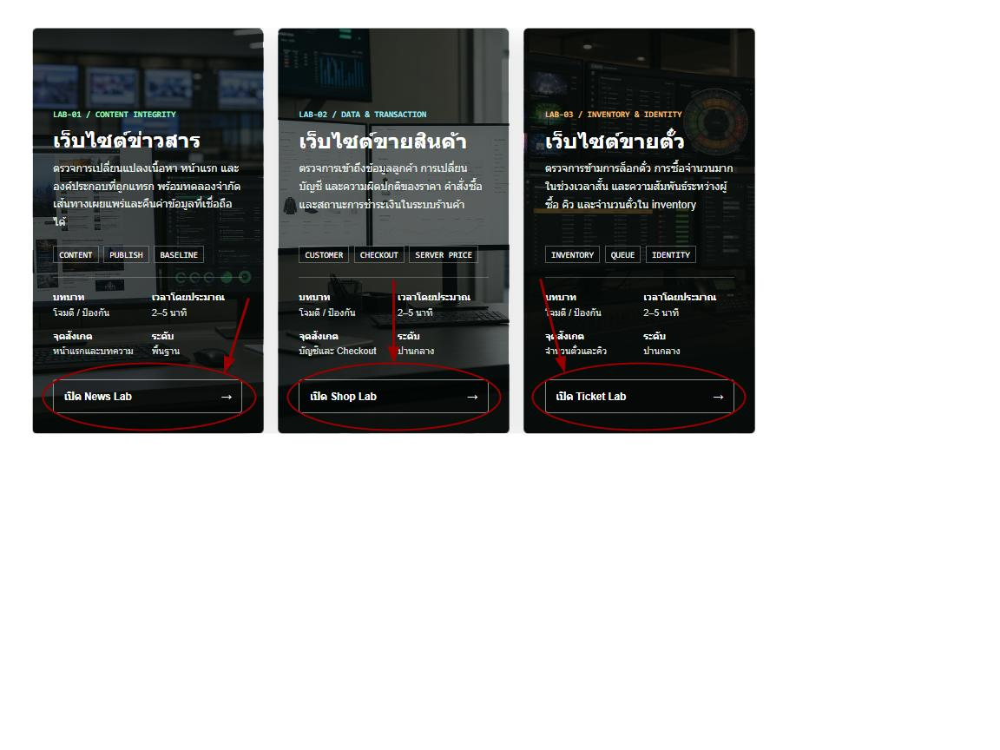
- 1. กดเมนู Simulationระบบจะพามายังหน้ารวม Lab ทั้งหมด ไม่ต้องเริ่มจาก Challenge Mode
- 2. เลือกการ์ดเว็บไซต์จำลองแต่ละเว็บมีลักษณะความเสี่ยงต่างกัน: ข่าวสารเน้นเนื้อหา, ร้านค้าเน้นข้อมูลลูกค้า/คำสั่งซื้อ, เว็บตั๋วเน้นจำนวนตั๋ว/คิวซื้อ
- 3. สังเกตสองฝั่งของหน้าจอฝั่งซ้ายคือเว็บไซต์ใน iframe ส่วนฝั่งขวาคือ panel ที่ใช้ควบคุมสถานการณ์และอ่านผลที่เกิดขึ้น
- 4. รีเซ็ตเมื่ออยากเริ่มใหม่แต่ละ Lab มีคำสั่งฝ่ายป้องกันสำหรับกู้คืนหรือรีเซ็ตผลจำลอง เมื่อรีเฟรชหน้า Lab จะเริ่มจากสถานะปกติของผู้ใช้คนนั้น
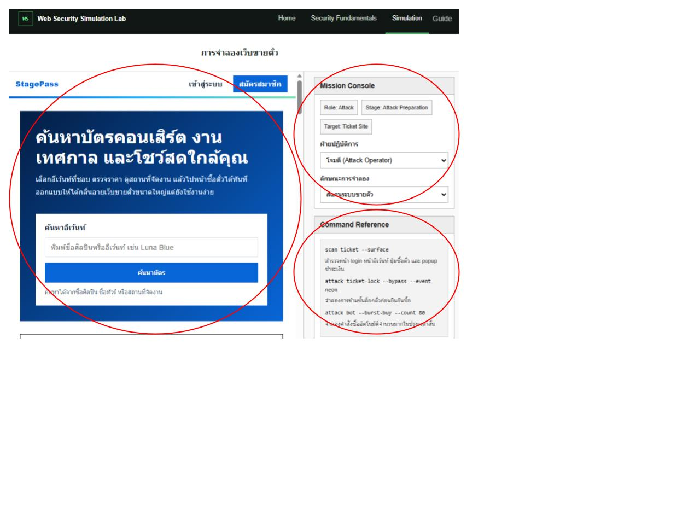
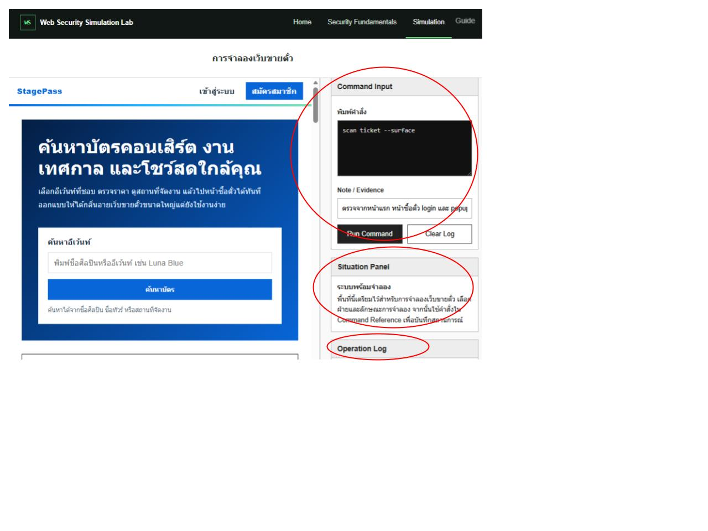
Challenge Mode
โหมดท้าทายสำหรับฝึกป้องกันแบบจับสถานการณ์เอง
Challenge Mode จะสุ่มเว็บไซต์และสุ่มเหตุการณ์โจมตี ผู้ใช้รับบทเป็นฝ่ายป้องกันเท่านั้น จุดสำคัญคือระบบไม่ได้เฉลยทันทีว่าต้องใช้คำสั่งไหน ผู้ใช้ต้องอ่านอาการจากเว็บ ดู DATA LINK CONSOLE และเทียบกับคู่มือกระดาษเพื่อเลือกคำสั่งให้ตรงสถานการณ์
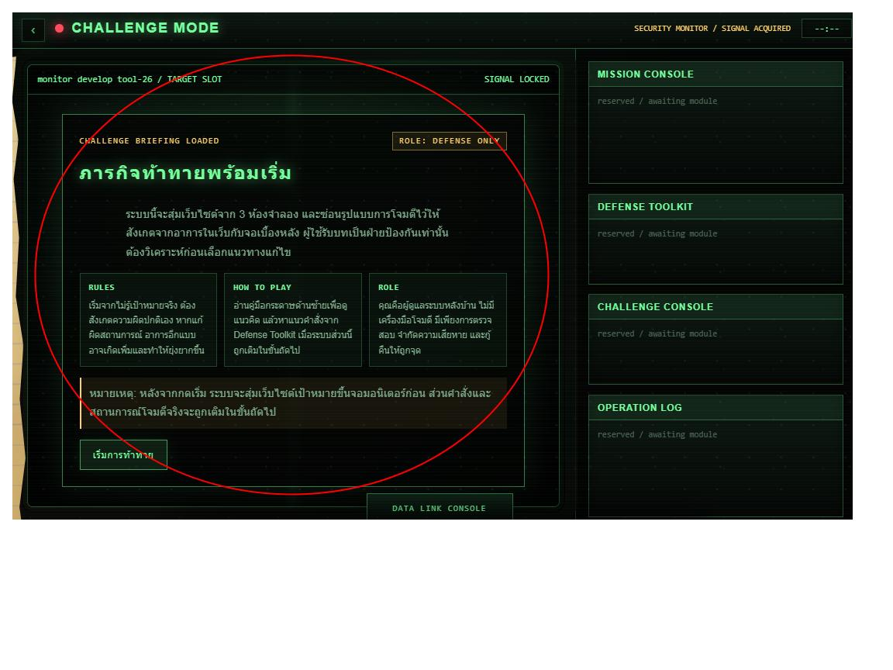
- 1. เข้าผ่านปุ่ม challenge modeปุ่มนี้อยู่บนแถบเมนูหลักด้านขวา ใช้เข้าโหมดท้าทายโดยตรง
- 2. อ่านหน้าชี้แจงก่อนเริ่มทำความเข้าใจว่าคุณเป็นฝ่ายป้องกัน และต้องเลือกแนวทางกู้คืนจากหลักฐานที่เห็น
- 3. เปิดคู่มือกระดาษคู่มือกระดาษไม่ได้เฉลยสถานการณ์ แต่ช่วยบอกลำดับคิดและ keyword ที่ควรไปหาใน DEFENSE TOOLKIT
- 4. ตรวจ DATA LINK CONSOLEใช้ดูข้อมูลภายในระบบ เช่น content, customer, order, inventory หรือ identity เพื่อหาว่าความผิดปกติมาจากจุดไหน
- 5. ระวังคำสั่งผิดถ้าใช้คำสั่งผิด ระบบจะรบกวนจอและอาจมี mini game ให้ต่อสาย เพื่อจำลองความเสียเวลาจากการแก้ผิดทาง
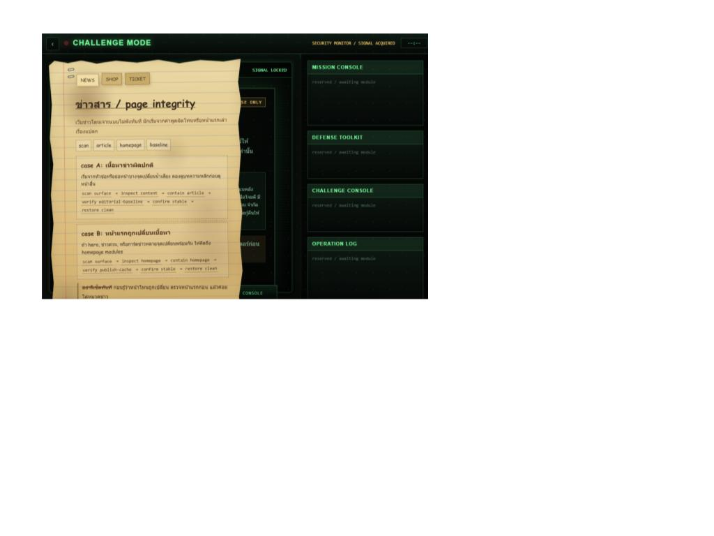
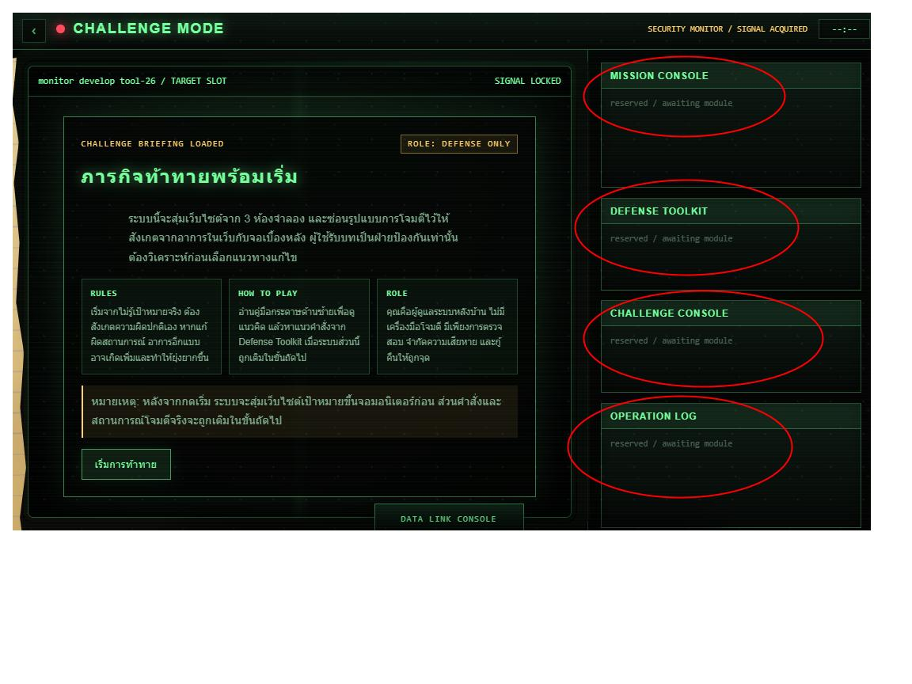
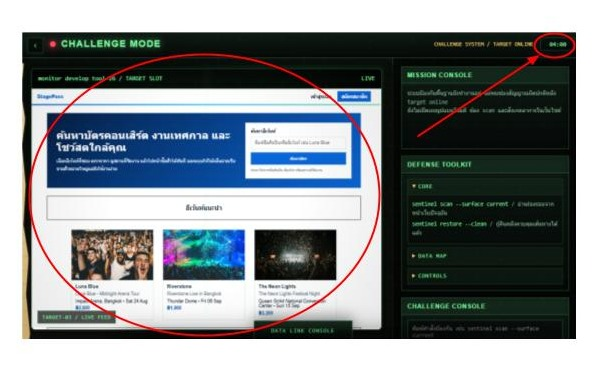
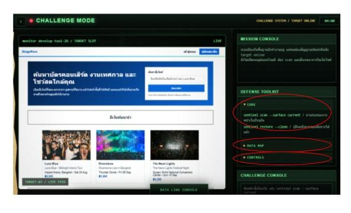
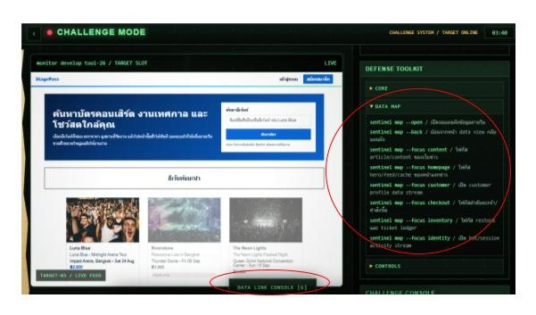
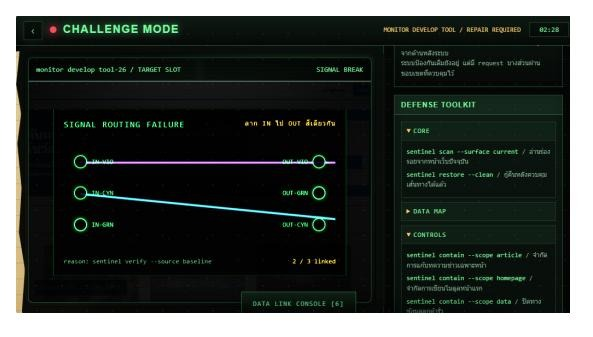
มองหาเนื้อหาข่าวหรือหน้าแรกที่ผิดน้ำเสียง จากนั้นตรวจ content/integrity ใน DATA LINK
มองหาอาการเกี่ยวกับข้อมูลลูกค้า คำสั่งซื้อ หรือราคา แล้วใช้ DATA LINK ตรวจ customer/order/checkout
มองหาอาการตั๋วหมดเร็ว ตั๋วเกินจำนวน หรือคิวผิดปกติ แล้วตรวจ inventory/queue/identity
Demo Videos
พื้นที่สำหรับวิดีโอสาธิต 2 คลิป
ส่วนนี้เตรียมไว้สำหรับใส่วิดีโอภายหลัง แนวทางที่เหมาะคือแยกเป็น 2 คลิป: คลิปแรกอธิบายการใช้ Simulation แบบปกติ และคลิปที่สองอธิบาย Challenge Mode ตั้งแต่เริ่มสุ่มสถานการณ์จนถึงหน้าสรุปผล
หมายเหตุ: วิดีโอสาธิตมีความคมชัด 720p เนื่องจากต้องปฏิบัติตามข้อกำหนดและเงื่อนไขของ PaaS (Platform as a Service) รวมถึงข้อจำกัดด้านขนาดไฟล์สำหรับการอัปโหลด ภาพอาจไม่คมเท่าไฟล์ต้นฉบับ แต่ยังคงเสียงไว้ที่ 128kbps เพื่อให้ฟังคำอธิบายได้ชัดเจนขึ้น
คลิปที่ 1: วิธีใช้งาน Simulation
แนะนำการเลือก Lab, เลือกบทบาท, กดคำสั่งจาก Command Reference, รันคำสั่ง และอ่านผลจาก Situation Panel กับ Operation Log
คลิปที่ 2: วิธีเล่น Challenge Mode
แนะนำการอ่านกฎก่อนเริ่ม เปิดคู่มือกระดาษ เลือกคำสั่งจาก DEFENSE TOOLKIT ใช้ DATA LINK CONSOLE และจัดการ mini game เมื่อใช้คำสั่งผิด
Before You Start
คำแนะนำสั้น ๆ ก่อนให้ผู้ใช้ทดลอง
เว็บนี้ออกแบบให้ผู้ใช้เรียนรู้จากการสังเกต ไม่ใช่จากการเฉลยตรง ๆ ทุกจุด ดังนั้นควรชวนผู้ใช้ดูทั้งหน้าเว็บจำลอง panel และ log ประกอบกัน โดยเฉพาะ Challenge Mode ที่ต้องวิเคราะห์สถานการณ์ก่อนเลือกคำสั่ง
ถ้าผู้ใช้ไม่เคยเล่น ให้ลอง Simulation อย่างน้อยหนึ่ง Lab เพื่อเข้าใจโครง panel ก่อนเข้า Challenge Mode
บางเหตุการณ์ไม่ได้เห็นชัดบนหน้าเว็บทันที โดยเฉพาะเว็บขายสินค้าและเว็บขายตั๋วที่มีอาการอยู่หลังบ้าน
คำสั่งและสถานการณ์ทั้งหมดในเว็บนี้เป็นสื่อการเรียนรู้ใน Lab ที่ได้รับอนุญาต ไม่ใช่คำแนะนำสำหรับนำไปใช้กับระบบจริง